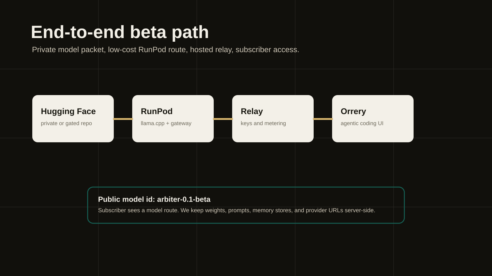
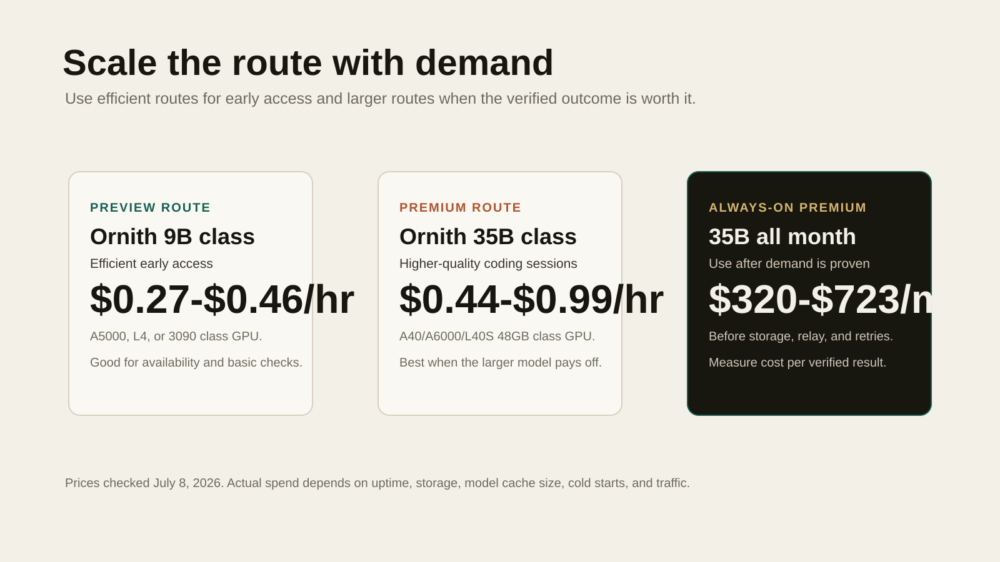

A normal coding model can write a plausible patch. Arbiter is built around a stricter idea: the model proposes, the verifier decides. In the beta route, a coding LLM generates candidates, Arbiter compares and refines them with compact latent reasoning signals, and external checks decide whether a branch is trusted.
What is in the beta
The public subscriber surface is simple: an OpenAI-compatible model route named arbiter-0.1-beta. The route can be used by Orrery/BuddyIDE for agentic coding runs, repair attempts, and benchmark-style evaluation. Internally, Arbiter adds candidate control, repair behavior, memory hints, and verifier-backed selection around the LLM.
The public explanation stays intentionally high level. We can say Arbiter uses latent reasoning as a compact workspace for ranking and refining candidate code paths. We do not disclose training recipes, hidden prompts, traces, memory stores, graph/diffusion internals, or repair heuristics in beta materials.

The LLM used
The premium beta bundle is built around LordNeel/Ornith-1.0-35B-GGUF-llamacpp-tp1:Q4_K_M. That is the quality path for demos and SWE-style evaluation bursts. For the actual first RunPod rollout, with a $50 budget and no subscribers yet, the recommended live route is a smaller Ornith 9B Q4 model while keeping 35B as a controlled burst route.
Cost plan for a $50 budget
Prices below were checked on July 8, 2026. RunPod bills Pods per hour/per second depending product surface, and Serverless bills workers while they run. Storage and cold starts still matter.

| Route | GPU target | Model | Approx rate | $50 active time | Use now? |
|---|---|---|---|---|---|
| Cheapest quiet beta | RTX A5000 Pod | Ornith 9B Q4 | $0.27/hr | about 185 hr | Yes, if available |
| Stable 24GB option | L4 Pod | Ornith 9B Q4 | $0.39/hr | about 128 hr | Yes |
| Cheap 48GB burst | A40 Pod | Ornith 35B Q4 | $0.44/hr | about 113 hr | Demos/evals only |
| Fast quality burst | L40S Pod | Ornith 35B Q4 | $0.99/hr | about 50 hr | Only if quality matters more than hours |
| Serverless 24GB | L4/A5000/3090 class | Ornith 9B Q4 | $0.69/hr active | about 72 active hr | Good once traffic is spiky |
| Serverless 48GB | A40/A6000 class | Ornith 35B Q4 | $1.22/hr active | about 41 active hr | Later |
A 24/7 35B Pod is not the right first move. Even the cheaper A40 path at roughly $0.44/hr is about $321/month before storage. L40S at roughly $0.99/hr is about $723/month before storage. For a no-subscriber beta, stop the pod when demos are done.
Step-by-step deployment plan
- Create a private or gated HF repo. Upload the Arbiter HF packet, not public weights. Keep the repo private while the beta is closed source.
- Start with Ornith 9B Q4 on RunPod. Use an RTX A5000, L4, RTX 3090, or similar 24GB Pod if you can get it cheaply. This is the low-key model route for first testers.
- Keep Ornith 35B Q4 as a burst profile. Use A40, RTX A6000, or L40S 48GB only when you are running a demo, a harness smoke, or a benchmark slice.
- Serve the model through llama.cpp. Expose an OpenAI-compatible endpoint, then point the Arbiter gateway at that route.
- Put the Arbiter gateway behind subscriber auth. Keep RunPod URLs, HF tokens, provider keys, and relay secrets server-side only.
- Wire Orrery/BuddyIDE through the hosted relay. The app should request
arbiter-0.1-beta, while Supabase or the gateway owns credentials and metering. - Run smoke before announcing. Check
/v1/models, non-stream chat, streaming chat, one coding harness task, and one hidden-test task. - Cap spend manually. Stop Pods after tests. Keep Serverless scale-to-zero for later, when traffic is bursty enough to justify cold-start complexity.
Minimal command shape
huggingface-cli repo create your-org/arbiter-0.1-beta --type model --private
huggingface-cli upload your-org/arbiter-0.1-beta ./hf-upload --repo-type model
# Low-key beta route
llama serve -hf deepreinforce-ai/Ornith-1.0-9B-GGUF:Q4_K_M \
--ctx-size 8192 \
--host 0.0.0.0 \
--port 8080
# Premium burst route
llama serve -hf LordNeel/Ornith-1.0-35B-GGUF-llamacpp-tp1:Q4_K_M \
--ctx-size 8192 \
--host 0.0.0.0 \
--port 8080Evidence boundary
Current beta evidence records a 92/100 frozen local projection on the first 100 SWE-bench Verified tasks. That is release evidence, not an official leaderboard claim. Public wording should stay precise: Arbiter 0.1 beta is a closed-source subscriber beta for verifier-grounded coding runs.
Sources for pricing
- RunPod GPU pricing for Pod, Serverless, and storage rates.
- RunPod Serverless pricing docs for pay-per-second worker behavior.
- Hugging Face storage limits for private repo free tiers and private storage policy.
- Hugging Face pricing for private storage pay-as-you-go reference rates.